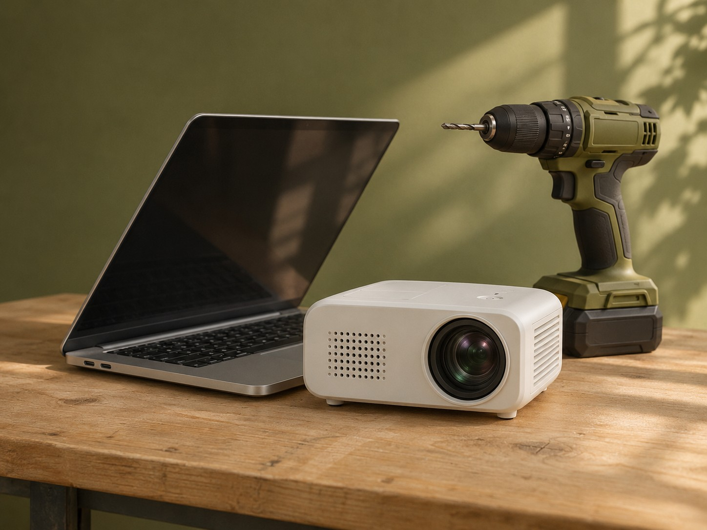

Tecnología
Portátiles, tabletas y periféricos.
Centro comunitario de equipos
Organiza el inventario, gestiona los préstamos y mantén los equipos de tu comunidad en circulación.

Portátiles, tabletas y periféricos.
Proyectores, cámaras y sonido.
Taladros y equipos de trabajo.
Materiales de uso comunitario.
Reutilizar equipos amplía el acceso de la comunidad y aprovecha recursos que pasarían tiempo guardados.